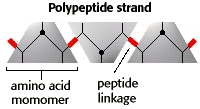

Large Molecules Problem Set
Problem 3: Tertiary structure of a protein
Tutorial to help answer the question
The tertiary structure of a protein refers to the:
A. Sequence of amino acidsB. Presence of alpha-helices or beta-sheets
C. Unique three dimensional folding of the molecule
D. Interactions of a protein with other subunits of enzymes
E. Interaction of a protein with a nucleic acid
Tutorial
| It is convenient to describe protein structure in terms of 4 different aspects of covalent structure and folding patterns. The different levels of protein structure are known as primary, secondary, tertiary, and quaternary structure. |
| The primary structure is the sequence of amino acids that make up a polypeptide chain. 20 different amino acids are found in proteins. The exact order of the amino acids in a specific protein is the primary sequence for that protein. |  |
Secondary Structure of Proteins
| Protein secondary structure refers to regular, repeated patterns of folding of the protein backbone. The two most common folding patterns are the alpha helix and the beta sheet. | |
|
Alpha Helix
In an alpha helix, the polypeptide backbone coils around an imaginary helix axis in clockwise direction. In this illustration, only the N-C-CO backbone atoms are shown. Note the coiling of the backbone around an imaginary axis down the center of the helix. |
|
|
Beta sheet
In the beta sheet secondary structure, the polypeptide backbone is nearly fully extended. The R-groups (not shown) are alternately pointed above and then below the extended backbone. |
|
Tertiary Structure of Proteins
| Tertiary structure refers to the overall folding of the entire polypeptide chain into a specific 3D shape. The tertiary structure of enzymes is often a compact, globular shape. | |
| Tertiary structure of the triose phosphate isomerase (TPI) molecule. | |

|
|
Quaternary Structure of Proteins
| Many proteins are formed from more than one polypeptide chain. The quaternary structure describes the way in which the different subunits are packed together to form the overall structure of the protein. For example, the human hemoglobin molecule shown below is made of four subunits. | |


Department of Biochemistry and Molecular Biophysics
The University of Arizona
Revised: October 2004
Contact the Development Team
http://biology.arizona.edu
All contents copyright © 1996-2003.
All rights reserved.